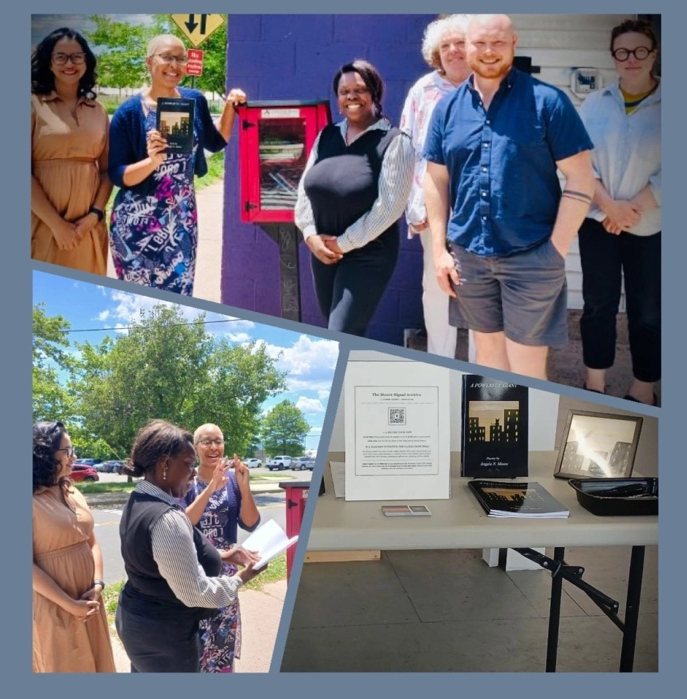
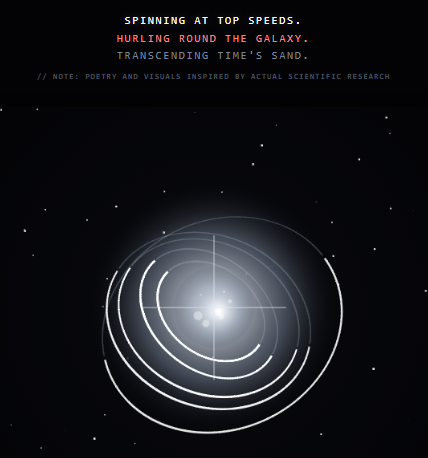

Broadcast Piece — Sat Gus
Manifested for Orbit
Exhibition Spotlight & Spacebound Art Catalogue
Extending From Sirius to the Sun™ onto Earth, we release hand-inked collectible coins inside independent Free Little Art Galleries worldwide. While the front of each coin is photographed and launched into space as an archival art print, the back holds a hand-inked poetry fragment that remains hidden unless discovered in person.
In return for engaging with the work, we simply ask finders to pass along one quiet act of kindness—and visit the Coin Ledger to read their coin's complete poem and explore the space research behind it. Read the backstory in founder Angela N. Moore’s essay, “The Heart of the Project”.


Named after founder Angela N. Moore’s 2021 poem “From Sirius to The Sun” in The Literary Yard, this interactive anthology gathers an expanding series of original haiku drawn from her archive of over 4,000 citizen-science astronomy classifications.
While each poem responds directly to its linked observation, the rotating starfield acts as an atmospheric stage—an artistic interpretation evoking the quiet wonder of studying the cosmos rather than a literal telescope image.
